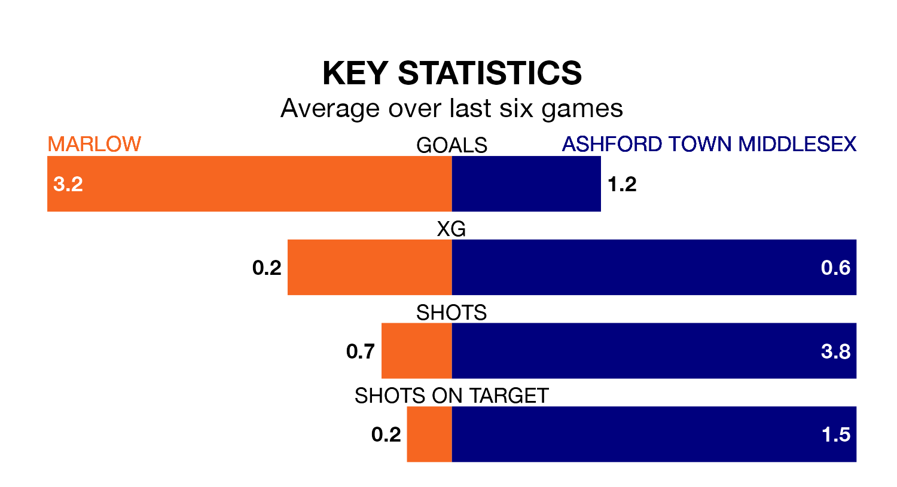

Mid-season relegation candidates Ashford Town Middlesex face a challenge away against high-flying Marlow at the Alfred Davis Memorial Ground on Saturday.
Ashford Town Middlesex are 19th in the Isthmian League Division One – South Central table, and have picked up five wins and six draws in their 24 games to date.
Marlow, meanwhile, are third in the standings with 56 points, having won 18 and drawn two of their first 25 matches, and are 11 points behind table-toppers Chertsey Town.
With 71 goals in 25 games so far this season, Marlow are the league's joint-highest scorers with 2.8 goals per game. And they are conceding fewer than average, letting in 32 goals at a rate of 1.3 per game.
Ashford Town Middlesex, meanwhile, are below average scorers, with 1.2 goals per game, compared to a league average of 1.7. They have conceded 1.7 goals per game.
The hosts are in fantastic form in the Isthmian League Division One South Central, with five wins and a draw from their last six games.
With no wins and two draws over that period, the Tangerines's form is much worse – they have taken two points from 18, compared to Marlow's 16.
In the last 10 years, Marlow and Ashford Town Middlesex have played each other on six occasions. Marlow won five of them and Ashford Town Middlesex one.
On average, Marlow scored 2.3 goals and the Tangerines 0.8 in those matches.
Their last meeting was on October 21, when Marlow won 3-1 away.
Marlow's last match was on Tuesday, a 2-1 win against Chipstead.
Ashford Town Middlesex lost 3-1 against Guernsey last time out, on February 3.
Updated: 11:18 (UTC), 08/02/24